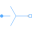

IMC_DOLInduction machine with squirrel cage started directly on line (DOL) |
|
Diagram
{kind=link}
Information
This information is part of the Modelica Standard Library maintained by the Modelica Association.
This example compares a time transient and a quasi static model of a multi phase induction machine.
At start time tOn a transient and a quasi static multi phase voltage source are
connected to an induction machine. The machine starts from standstill, accelerating inertias
against load torque quadratic dependent on speed, finally reaching nominal speed.
Simulate for 1 second and plot (versus time):
currentRMSsensor.I|currentSensorQS.abs_i[1]: (equivalent) RMS stator currentimc|imcQS.wMechanical: machine speedimc|imcQS.tauElectrical: machine torque
Parameters (8)
| VsNominal |
Value: 100 Type: Voltage (V) Description: Nominal RMS voltage per phase |
|---|---|
| fNominal |
Value: imc.fsNominal Type: Frequency (Hz) Description: Nominal frequency |
| tOn |
Value: 0.1 Type: Time (s) Description: Start time of machine |
| T_Load |
Value: 161.4 Type: Torque (N·m) Description: Nominal load torque |
| w_Load |
Value: 1440.45 * 2 * Modelica.Constants.pi / 60 Type: AngularVelocity (rad/s) Description: Nominal load speed |
| J_Load |
Value: 0.5 Type: Inertia (kg·m²) Description: Load inertia |
| p |
Value: 2 Type: Integer Description: Number of pole pairs |
| imcData |
Value: Type: AIM_SquirrelCageData Description: Machine data |
Outputs (2)
Components (27)
| voltageSourceQS |
Type: VoltageSource |
|
|---|---|---|
|  | starQS |
Type: Star |
| groundQS |
Type: Ground |
|
| powerSensorQS |
Type: PowerSensor |
|
| currentQuasiRMSSensorQS |
Type: CurrentQuasiRMSSensor |
|
| idealCloserQS |
Type: IdealClosingSwitch |
|
| booleanStepQS |
Type: BooleanStep[m] |
|
| ground |
Type: Ground |
|
| star |
Type: Star |
|
| cosineVoltage |
Type: CosineVoltage |
|
| idealCloser |
Type: IdealClosingSwitch |
|
| booleanStep |
Type: BooleanStep[m] |
|
| currentQuasiRMSSensor |
Type: CurrentQuasiRMSSensor |
|
| terminalBox |
Type: MultiTerminalBox |
|
| imc |
Type: AIM_SquirrelCage |
|
| loadInertia |
Type: Inertia |
|
| quadraticLoadTorque | ||
| powerSensor |
Type: PowerSensor |
|
| loadInertiaQS |
Type: Inertia |
|
| quadraticLoadTorqueQS | ||
| imcData |
Type: AIM_SquirrelCageData Description: Machine data |
|
| imcQS |
Type: IM_SquirrelCage |
|
| groundMachineQS |
Type: Ground |
|
| starMachineQS |
Type: Star |
|
| terminalBoxQS |
Type: MultiTerminalBox |
|
| starMachine |
Type: Star |
|
| groundMachine |
Type: Ground |